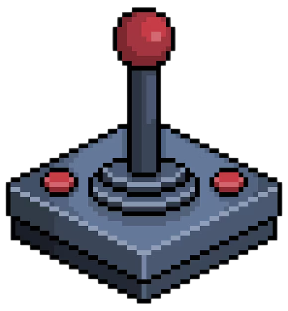

PlaySent
Acción
Aventura
Simulación
Estrategia
Mundo Abierto
Cerrar sesión
Los mejores juegos de Aventura
❮
The Last Of Us
The Last Of Us II
Hollow Knight
Red Dead Redemption II
Assassin’s Creed Valhalla
Life is Strange
Firewatch
Tomb Raider (2013)
Ori and the Blind Forest
A Plague Tale Requiem
❯
×
Más detalles